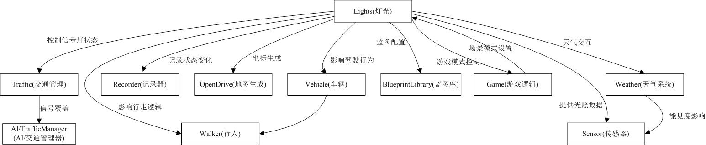
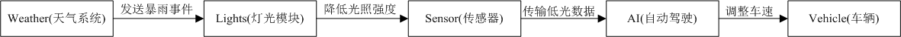

灯光模块(Lights)说明文档
目录
1. 模块概述
1.1 UCarlaLightSubsystem介绍
UCarlaLightSubsystem是 carla 仿真平台中用于管理动态灯光的核心组件类，属于 carla 的虚幻引擎插件(CarlaUnreal)的一部分。这个子系统主要负责管理 carla 世界中的灯光（如交通灯、路灯等），并处理客户端与灯光状态的同步。UCarlaLightSubsystem源代码
1.1.1 主要功能
- 灯光注册与注销：在模拟环境中，灯光（如交通灯、路灯等）是动态的资源。通过注册和注销机制，
UCarlaLightSubsystem可以动态地管理这些灯光资源。当灯光被创建时，注册到子系统中，这样子系统就可以跟踪和管理它们；当灯光被销毁时，从子系统中注销，避免资源泄漏或无效引用。 - 灯光状态同步：
GetLights和SetLights是实现这种双向通信的核心机制。它们确保了客户端能够获取最新的灯光信息，同时服务器可以动态调整灯光状态。 - 日夜循环控制：通过控制昼夜变化，
CarlaLightSubsystem可以模拟真实世界中的光照条件，使自动驾驶系统能够在不同光照条件下进行测试和验证。 - 脏标记机制：在多客户端的仿真环境中，频繁的同步操作可能会导致性能问题。通过脏标记机制，子系统可以记录哪些客户端需要更新，避免对所有客户端进行不必要的同步操作。
1.2 UCarlaLight介绍
UCarlaLight定义了一个 灯光组件，用于管理 carla 中的各类灯光（如交通灯、路灯等）。负责单个灯光的状态管理，并与 carla 的天气系统、RPC 通信、大型地图管理等模块交互。属于 carla 的虚幻引擎插件(CarlaUnreal)的一部分，为 carla 提供了高度可配置的、逼真的动态照明系统，是创建逼真昼夜循环和天气效果的关键组件。UCarlaLight源代码
1.2.1 主要功能
- 动态光照控制：实时调整光源强度、颜色和方向；支持昼夜循环的光照变化；天气相关光照效果（雨、雾、云等）。
- 光源类型支持：定向光（模拟太阳/月亮）；点光源；聚光灯；天光（Skylight）。
- 车辆专用灯光：车头灯、尾灯、刹车灯、转向灯；应急灯；车内照明。
- 街道照明系统：路灯控制；交通信号灯；建筑外部照明。
1.2.2 组件核心功能
在动态灯光组件中，核心功能包括：灯光属性控制、子系统集成、状态同步、事件记录。
- 灯光属性控制：动态调整灯光强度、颜色、开关状态及类型。
- 子系统集成：与
CarlaLightSubsystem交互实现全局灯光管理。 - 状态同步：支持与 RPC 协议兼容的灯光状态序列化（
carla::rpc::LightState）。 - 事件记录：灯光状态变化时触发事件记录，支持仿真回放与调试。
1.3 灯光模块
灯光模块在 carla 中负责模拟现实世界中的各类光源（如交通灯、路灯、车辆灯等），并确保它们在虚拟环境中的行为符合物理规律和交通规则。 通过红绿灯管理车辆和行人的通行权；动态调整灯光颜色、强度以匹配昼夜或天气变化；为摄像头、激光雷达提供光照条件（如夜间低光、雨雾散射）；支持自动驾驶算法在不同终端获取一致的灯光状态。
2. 模块控制关系
2.1 灯光模块(Lights)与其他模块关系总览
- 展示灯光模块与其他核心模块的全局依赖关系，帮助 lights 在 carla 系统中的定位。快速了解模块间上下游关系，设计新功能时避免遗漏依赖。
- 核心枢纽：灯光模块直接控制交通信号，间接影响车辆、行人、传感器等模块。

2.2 关键交互图
2.2.1 交通信号控制流程
- 描述信号灯状态变化时，系统如何协调车辆和行人的行为。例如，在测试场景中交通管理器强制设置红灯，灯光子系统通知所有车辆和行人，车辆触发刹车逻辑，行人停止移动。
- 应用场景：调试交通灯同步问题；验证自动驾驶算法对红灯的响应等。

- 流程顺序：交通管理器 → 灯光模块 → 车辆/行人响应。
2.2.2 天气影响灯光
- 展示天气变化如何通过灯光模块传递到自动驾驶系统。例如，天气系统发送暴雨事件；灯光模块降低路灯强度；传感器捕获低光照数据；自动驾驶 AI 决策降速。
- 应用场景：模拟极端天气下的传感器性能；测试车辆在低能见度下的行为。

- 数据流：天气事件 → 灯光强度调整 → 传感器数据 → 车辆控制。
2.3 场景示例图
- 场景：模拟暴雨天气下的交通系统响应。
- 天气系统触发能见度下降；交通管理器延长绿灯时间以缓解拥堵；传感器数据用于算法性能分析。

3. 技术实现
UCarlaLight继承自虚幻引擎的 ULightComponent 类，并扩展了 carla 特有的功能。
3.1 核心类函数
继承自 ULightComponent 的类都必须通过这两个函数管理生命周期。批量处理入口 BeginPlay() 时合并提交所有灯光参数到渲染线程（减少每帧开销）。资源回收枢纽 EndPlay() 集中释放GPU资源（避免帧间卡顿）。
- BeginPlay()：替代构造函数（因UE禁止直接使用构造函数初始化游戏逻辑）。
- EndPlay()：替代析构函数（保证资源安全释放）。组件销毁时的资源清理函数，确保灯光从系统中安全移除。
3.2 灯光注册与注销
RegisterLight()
- 作用：将灯光注册到天气系统，使灯光效果能响应天气变化。预期可以实现在雨天/雾天自动调整灯光强度和散射；根据昼夜循环自动开关路灯；支持天气特效（如雨滴折射）对灯光的影响。
- 关键逻辑：
- 通过
GetWorld()->GetSubsystem<UCarlaLightSubsystem>()获取子系统实例。 - 调用
CarlaLightSubsystem->RegisterLight(this)完成注册。 - 标记
bRegistered = true防止重复注册。 - 注销逻辑：在
EndPlay()中调用CarlaLightSubsystem->UnregisterLight(this)。
3.3 属性控制函数
| 函数名 | 参数 | 功能描述 |
|---|---|---|
| SetLightIntensity() | float Intensity |
设置灯光强度并更新渲染效果。 |
| SetLightColor() | FLinearColor Color |
设置颜色并记录状态变化事件。 |
| SetLightOn() | bool bOn |
切换灯光开关状态并触发更新。 |
| SetLightType() | ELightType Type |
设置灯光类型（如车灯、路灯等）。 |
GetLightState() 与 SetLightState()
- 作用：实现与 RPC 协议的状态双向同步。
- 数据结构：
carla::rpc::LightState { FVector _location; // 世界坐标位置 float _intensity; // 强度 LightGroup _group; // 类型（枚举） FLinearColor _color; // 颜色 bool _active; // 是否开启 int _id; // 唯一标识符 }
3.4 辅助功能
GetLocation()
- 作用：获取灯光在全局坐标系中的位置，支持大型地图场景中的坐标转换。
- 流程：
- 获取组件所属 Actor 的本地坐标:
GetOwner()->GetActorLocation()。 - 通过Carla游戏模式获取大型地图管理器：
cpp ACarlaGameModeBase* GameMode = UCarlaStatics::GetGameMode(GetWorld()); ALargeMapManager* LargeMap = GameMode->GetLMManager(); } - 通过
ALargeMapManager将坐标转换为全局坐标系,并返回转换后的全局坐标。
RecordLightChange()
- 作用：记录灯光状态变化事件，支持仿真回放和状态同步。。
- 触发条件：调用
SetLightColor()改变灯光颜色 ，SetLightOn()改变灯光开关状态，SetLightState()更新灯光的总体状态。 - 依赖模块：通过
UCarlaStatics::GetCurrentEpisode()获取记录器实例。 - 记录时间包含灯光ID(灯光的唯一标识)、时间戳(由记录器自动添加)、灯光当前位置、当前颜色值、当前强度值、当前开关状态等。
4. 使用场景
4.1 动态环境光照
CARLA 支持高度灵活的动态光照系统，允许用户通过代码实时调整场景中的光照效果，以模拟不同时间、天气条件下的真实环境。代码示例展示路灯夜间自动开启，通过 Unreal Engine 的 LightComponent 控制光照属性：
// 脚本控制路灯夜间自动开启
LightComponent->SetLightOn(true); //启用路灯
LightComponent->SetLightIntensity(5000.0f); //设置光照强度
LightComponent->SetLightColor(FLinearColor(0.9f, 0.9f, 0.8f)); //设置光照颜色
SetLightOn）可通过布尔值 true/false 动态开启或关闭路灯，适用于昼夜循环仿真。
- 光照强度（SetLightIntensity）调整光源亮度（如 5000.0f 模拟高亮度路灯），影响场景的明暗表现。
- 光照颜色（SetLightColor）使用 FLinearColor 设置 RGB 值（如 (0.9, 0.9, 0.8) 接近自然暖白光），匹配现实世界的光谱特性。
4.2 车辆信号灯同步
CARLA 提供了精细化的车辆信号灯控制系统，允许用户通过代码实时调整车灯状态（如刹车灯、转向灯等），以模拟真实车辆的灯光行为。以下是一个典型的刹车灯状态同步示例代码，展示如何通过 RPC（远程过程调用）协议动态更新车灯状态：
// 同步刹车灯状态到 RPC 协议
carla::rpc::LightState state = LightComponent->GetLightState();
state._color = FLinearColor::Red; // 设置刹车灯颜色为红色
state._active = bIsBraking; // 根据刹车状态激活/关闭刹车灯
LightComponent->SetLightState(state); // 应用新的灯光状态
GetLightState）通过carla::rpc::LightState 结构体读取当前车灯的颜色、亮度、开关状态等参数。
- 动态灯光控制（SetLightState）可实时修改_color（如FLinearColor::Red 设为红色）和_active（布尔值控制开关）。
- 与车辆行为同步，示例中的 bIsBraking 可绑定到车辆的刹车信号，实现刹车时自动亮红灯。
4.3 仿真事件回放
CARLA 提供事件回放（Replay）功能，允许用户记录并复现仿真过程中的关键状态变化，例如车辆运动、信号灯切换、天气变化等。通过调用RecordLightChange()，可以精确记录灯光状态（如开关、颜色、强度）的修改时间点，并在回放时按时间轴还原这些变化。
- 事件回放的特点：
- 时间戳记录：自动保存灯光状态变化的触发时间，确保回放时同步。
- 精准复现：支持快进、暂停、逐帧分析，便于调试和算法验证。
- 多事件同步：可与车辆轨迹、传感器数据等结合，实现完整场景回放。
5. 注意事项
- 子系统依赖：Actor 必须存在于已启用
CarlaLightSubsystem的场景中。 - 线程安全：避免在非游戏线程（如异步任务）中直接调用
SetLightXxx函数。 - 大型地图支持：使用
GetLocation()而非直接获取 Actor 坐标以确保跨地图兼容性。